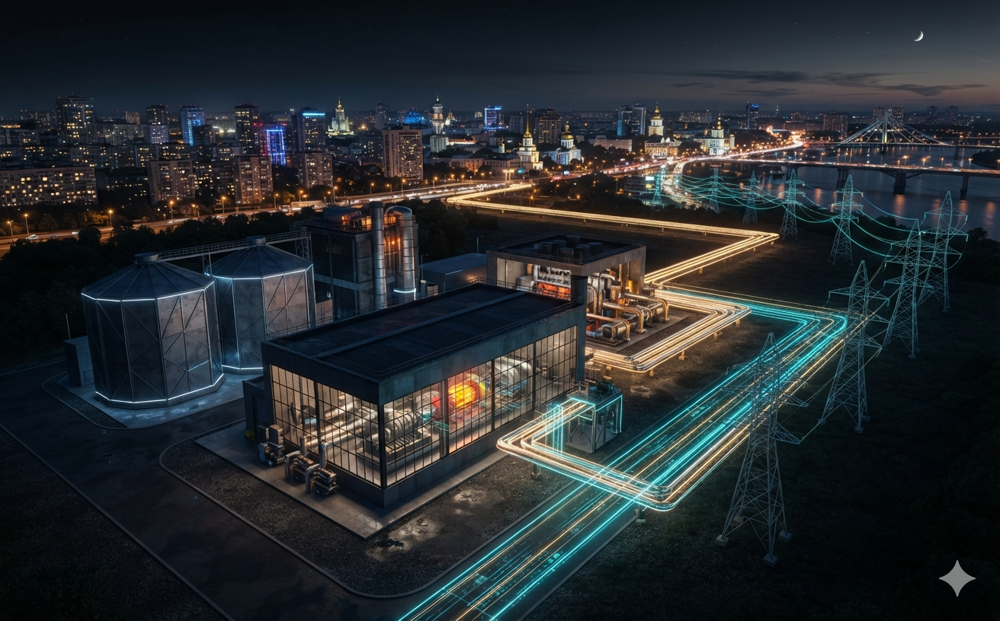

ПРОЛОГ. Біомаса як єдина диспетчеризована ВДЕ в ОЕС України

Енергетична система України (ОЕС) зазнала критичних руйнувань традиційної вугільної генерації. Головний виклик для енергосистеми — гострий дефіцит маневрової та напівпікової генерації (понад 4–5 ГВт). У той час як сонце і вітер працюють ривками, біопаливо виступає єдиним видом диспетчеризованої ВДЕ із 100% гарантованою диспетчеризацією.
Генерація залежить виключно від погоди. У головний вечірній пік навантаження країни (18:00–22:00), коли населення вмикає прилади, сонце сідає і вироблення СЕС падає строго до 0 МВт.
• Вимагають гігантських витрат на дорогі акумуляторні станції BESS.
Станція працює за прямою рівною лінією цілодобово. Паливо зі складу подається в топку безперервно, гарантовано утримуючи локальну енергосистему міста в темряву, штиль і 20-градусний мороз.
• Забезпечує пряму когенерацію CHP без потреби в акумуляторах.
Щорічний доступний залишок біомаси перевищує 35 млн т.у.п. Застосування технологій когенерації CHP на базі топок циркулюючого киплячого шару (CFB) та органічного циклу Ренкіна (ORC) формує потенціал заміщення понад 20 млрд м³ імпортного газу на рік зі зниженням собівартості муніципального тепла на 55–65%.